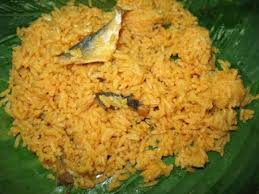

ATLÁNTICO
TURISMO EN EL DEPARTAMENTO
El Atlántico es un destino turístico vibrante, con playas, carnavales, gastronomía y sitios históricos.
ATRACCIONES TURÍSTICAS
- Playas de Puerto Colombia
- Castillo de Salgar
- Bocas de Ceniza
- El Carnaval de Barranquilla


COMIDA TÍPICA
La gastronomía del Atlántico incluye platos emblemáticos como el arroz de lisa, el sancocho de pescado y las arepas de huevo.
- Arroz de lisa 
- Sancocho de pescado
- Arepa de huevo
- Butifarra Soledeña


SECTOR ECONÓMICO
El Atlántico es un centro industrial clave en Colombia, con actividades en manufactura, comercio y agricultura.
- Textiles y confecciones
- Alimentos y bebidas
- Producción de yuca, plátano y maíz
INDUSTRIA

AGRICULTURA
Para volver a la página principal presione aquí: volver